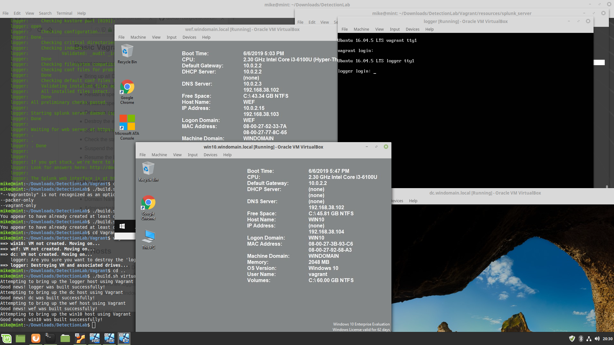

Setting Up Detection Lab on Linux Mint 19.1¶
This was my process for setting up the awesome Detection Lab project by Chris Long. I referenced Richard Bejtlich's write-up as well as Part 1 of Building Detection Lab in AWS. I installed Detection Lab on Linux Mint 19.1 running on an Intel NUC with 6th-gen i3 processor (dual-core w/ hyperthreading), 32 GB RAM, and 256 GB SSD.
Warning
I did most of the steps below and then ran into the following error when running the build script at the end:
VBoxManage: error: Details: code NS_ERROR_FAILURE (0x80004005), component MachineWrap, interface IMachine.
The problem turned out to be that I was performing the install via SSH. After troubleshooting for a while, I found an error in the DetectionLab\Vagrant\vagrant_up_logger.log file that showed the vboxmanage command starting with --type gui. Realizing that was not going to work via my SSH connection to my lab machine, I switched to the desktop to re-run the build script. It then worked like a champ. As each virtual machine was started during the install, the console screen for the VM would pop up and then complete the configuration changes to the VM. I didn't realize that a headless install was not supported. So make sure you are doing this at the GUI desktop console (at least when running the build.sh script).
Install & Configure VirtualBox¶
-
Started with a new install of Linux Mint 19.1. After applying all updates (
sudo apt-get update -y && sudo apt-get dist-upgrade -y), I added screen & ssh server withsudo apt-get update screen ssh. (But as mentioned above, don't use SSH to run the build script at the end.) -
Now install the latest version of VirtualBox using the VitualBox guide for Linux. (The
aptrepository is stil verison 5, so you need to install the newer version 6 from the VirtuaBox repo.) First I addeddeb https://download.virtualbox.org/virtualbox/debian <mydist> contrib(my Mint/Ubuntu distro isbionic) to/etc/apt/sources.list. Then I ran the following to complete the VirtualBox install:wget -q https://www.virtualbox.org/download/oracle_vbox_2016.asc -O- | sudo apt-key add - wget -q https://www.virtualbox.org/download/oracle_vbox.asc -O- | sudo apt-key add - sudo apt-get update sudo apt-get install virtualbox-6.0
-
Next download the the latest extension pack from the main downloads page and install it:
sudo VBoxManage extpack install <extension-pack-version>.vbox-extpack
-
Now add your account to the local VirtualBox group:
sudo usermod -aG vboxusers <your username>
-
To validate the VirtualBox install, I suggest verifying that you can create and run a VM. You don't even need to install an OS in the VM. Just make sure it will create a run a VM even though you will get a "No bootable medium found" message after start up. From a terminal on the desktop, run
VirtualBox &to bring up the window. Create a VM and run it. Then close VirtualBox once you've tested a running VM.
Install Detection Lab and Prereqs¶
-
Next install
gitand download Detection Lab:sudo apt-get install git
git clone https://github.com/clong/DetectionLab.git
-
Install Vagrant from the vendor's site. Use the instructions provided there. Pay attention to the notes, such as not using the prepackaged version and disabling other hypervisors (I disabled kvm, although I may not have needed to since I was able to successfully run a VM earlier). I downloaded and installed their current .deb package with:
sudo apt install ./vagrant_2.2.4_x86_64.deb
-
If building your own Windows VMs, also install Packer from the vendor's site. Use the instructions provided there. I downloaded their 64-bit Linux binary and unzipped it into
/usr/sbin. -
Install the vagrant-reload plugin:
vagrant plugin install vagrant-reload
-
Now reboot your host.
Build Detection Lab¶
-
As my standard user account, I kicked off the install with the option of using the Vagrant Cloud boxes, which are automatically downloaded with the
--vagrantonlyoption:./build.sh virtualbox --vagrantonly
-
As mentioned in the warning box above, I ran into errors with this build process until I realized that it needs to be performed on the GUI desktop. Once I moved to the desktop, installation went smoothly and finished in less than 2 hours.
-
Here's a look at the finished product:
